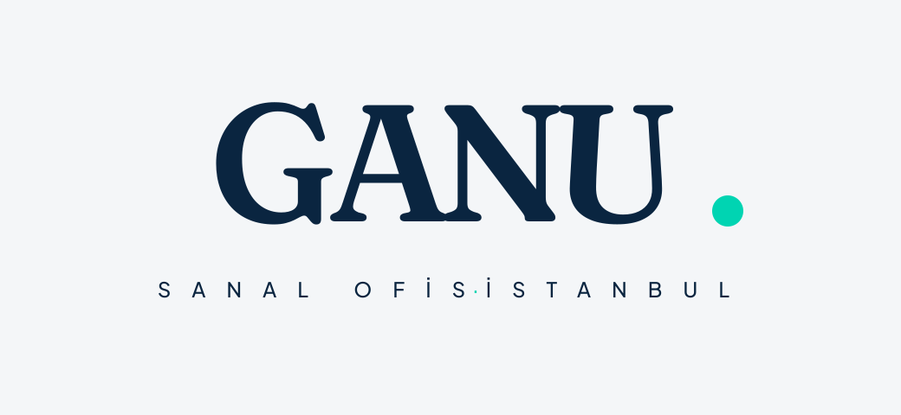
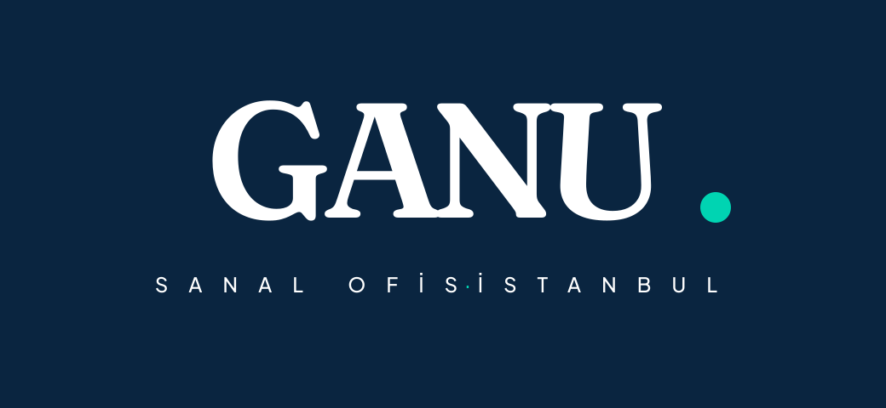
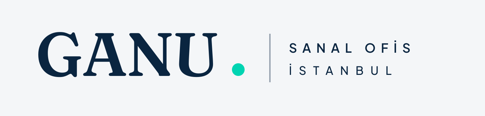
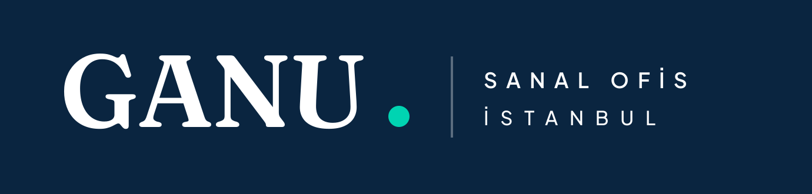
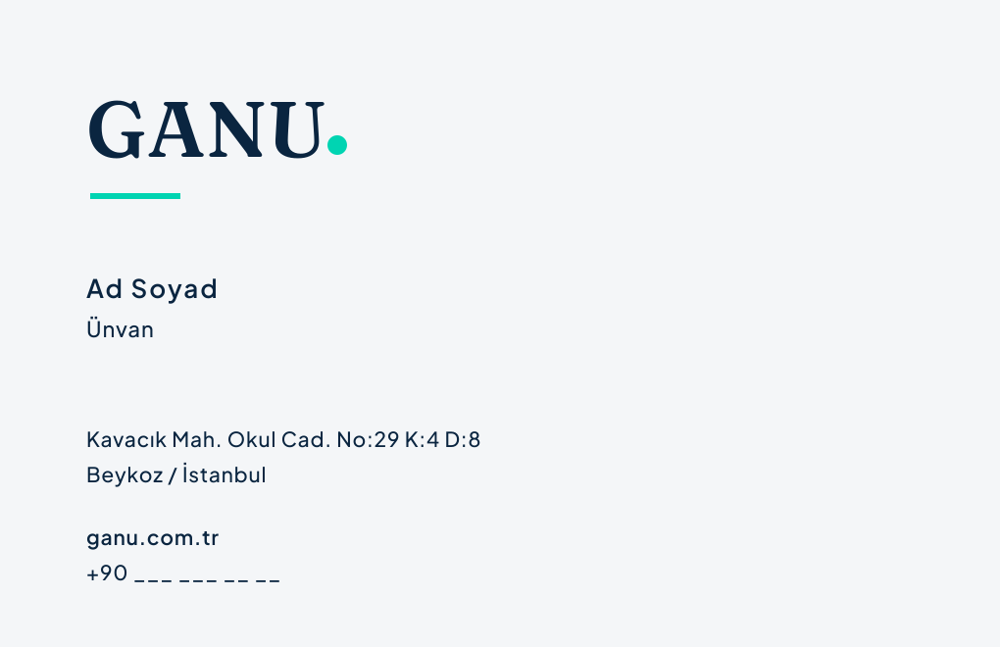
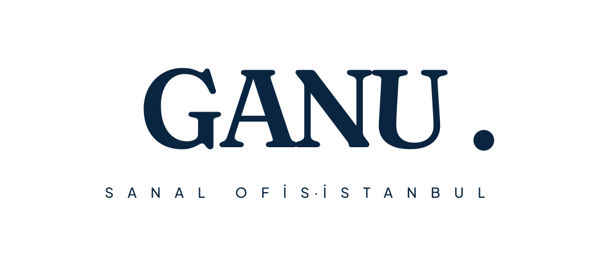
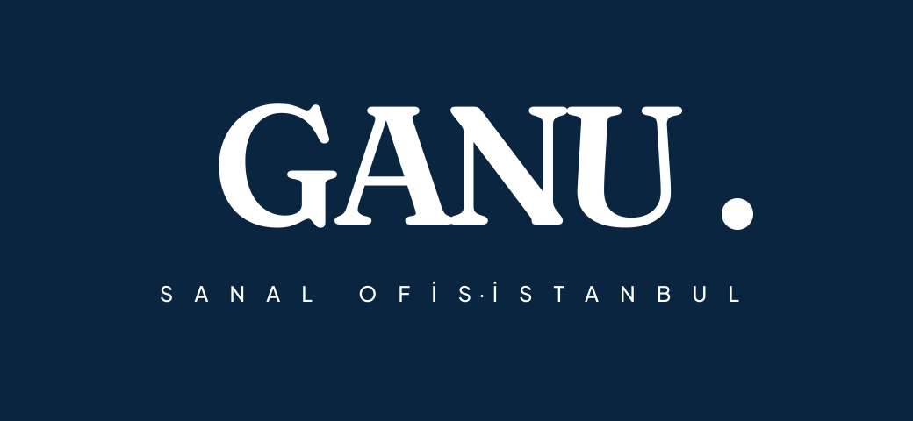

01Ana Logo (Merkez Kilit)
Birincil kullanım. Wordmark (Fraunces) + tek teal nokta aksanı. Açık zeminde lacivert, koyu zeminde beyaz; teal her iki durumda da aynı kalır. Klişe ikon yok.

Merkez kilit · açık zemin (birincil)

Merkez kilit · koyu zemin (negatif)
02Yatay Logo (Navbar / dar alan)
Web üst menüsü ve yatay/dar alanlar için. Wordmark + teal nokta | descriptor; ince dikey ayraç.

Yatay · açık zemin

Yatay · koyu zemin
03Amblem / Avatar & Favicon
"G" monogramı (Fraunces) + teal nokta. Daire kırpmasında (WhatsApp/IG) güvenli; 16px sekmede "G" okunur, teal nokta küçük aksan kalır.
04Kartvizit, Kaşe & Mono
85×55 mm. Kaşe ve tek-renk baskı için mono versiyon (teal yok, salt lacivert) kullanılır — faks/gravür güvenli.

Kartvizit arka

Mono · açık zemin (tek renk, teal yok)

Mono · koyu zemin
05Renk Paleti — Navy + Teal
Maksimum iki ana renk: Navy (metin/yapı) + Teal (yalnız aksan). Nötr zemin beyaz / açık gri. Sakin, pahalı, kurumsal otorite.
Navy#0A2540 · metin, yapı, zemin
Teal#00D4B2 · yalnız aksan (nokta)
Açık Gri#F4F6F8 · nötr zemin
Kontrast: Navy/Beyaz 15.3:1 (WCAG AAA). Önemli: Teal düşük kontrastlıdır — beyaz/açık zeminde asla metin rengi olarak kullanılmaz; yalnız nokta/şekil aksanı olarak kalır. Koyu zeminde teal nokta canlı durur.
06Tipografi
Marka adı · Fraunces 600
GANU.
Descriptor · Plus Jakarta 500
SANAL OFİS · İSTANBUL
Başlık · Fraunces 600
Prestijli iş adresi, sade kurulum.
Gövde · Plus Jakarta 400/500
Şirketinizin yüzü olan adres; sözleşmeden web'e tüm süreç tek elden.
Yüksek-kontrastlı serif (Fraunces) "sakin, pahalı, editorial, zamansız" konumlandırmaya hizmet eder. Logotype daima Fraunces 600 + teal nokta.
07Kurallar
✔ Yapılır
- Logoyu bol boşlukla kullan (net alan = "G" yüksekliği).
- Açık zeminde lacivert, koyu zeminde beyaz versiyon seç.
- Teal'i yalnız tek aksan (nokta) olarak kullan.
- Tek-renk gerekiyorsa mono versiyonu (teal'siz) kullan.
✘ Yapılmaz
- Teal'i beyaz/açık zeminde metin rengi yapma (düşük kontrast).
- İkinci bir aksan rengi veya degrade ekleme.
- Oranını bozma / eğme / gölge / 3D ekleme.
- Fontu (Fraunces) değiştirme; harf aralığını bozma.
- Klişe sektör ikonu (küre, ok, grafik, bina) ekleme.
08Net Alan
Logonun çevresinde, marka "G" harfinin yüksekliği kadar dokunulmaz boşluk bulunur.